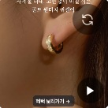
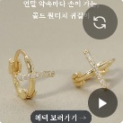

광고 소재 · 2026.09 – 10 소재 등록
주얼리 메타 광고 소재
판매 빈도가 낮은 상품 중 클릭가치가 높은 상품을 찾았습니다. 광고 후 주문이 늘어도 판매할 수 있도록 재고를 확인하고, 상품의 특징을 카피와 영상으로 풀었습니다.
라스트클릭 ROAS
165.8%
소재 6개 라스트클릭 매출 합계 ÷ 광고비 합계
내가 맡은 일
상품 후보 발굴 · 재고 확인 · 카피 및 영상 제작 · 소재별 성과 확인
대표 광고 소재
실제 광고 소재의 썸네일과 소재별 라스트클릭 ROAS입니다.


진행 과정
상품 후보 발굴
카페24 SERA의 클릭가치와 판매 빈도를 함께 보고, 판매량이 적어도 클릭당 기대 주문금액이 높은 상품을 찾았습니다.
재고 확인과 상품 선정
이지어드민에서 판매 가능한 재고를 확인했습니다. 클릭가치와 재고 조건을 함께 보고 각 소재에 사용할 상품을 정했습니다.
소재 제작과 성과 확인
상품별 후킹 카피와 콘셉트를 정하고 세로형 영상을 제작했습니다. 집행 후 소재별 전환과 라스트클릭 성과를 확인했습니다.